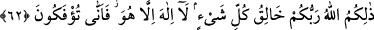

şükretmezler.” Bu ikinci cümlede “insanlar”ın tekrarlanması, nankörlüğün özellikle
bunlarda bulunduğunu açıkça belirtmek içindir. Çünkü, zamir yerine konulmuş olup
nankörlüğün insanın temel özelliği olduğunu gösteren zâhir bir isimle, nankörlük açıkça
insanlara âid kılınmaktadır. Yâni bunlar nimeti verenin kim olduğunu bilmedikleri ve
kendilerine ne denli büyük ve önemli nimetler bahşedildiğini görmezden geldikleri için
Allah’ın fazl u ihsanına karşı minnettar olmamaktadırlar. Bu nimetlerin kadr ü kıymetini
ancak nimetlerden birini kaybettiklerinde anlamaktadırlar. Sözgelimi, -Allah muhâfaza
etsin- herhangi bir zâlim, birini uzun bir müddet derin bir kuyuya hapsettiğinde, şu temiz
hava ve ışık nimetlerinin kadrü kıymetini ancak o zaman anlar.
[Sa’dî, Bustan’da şöyle der:]
Gece bekçisi hırsızlardan birinin elini bağladı.
Adamcağız bütün gece perişan oldu, ıstırap çekti.
Sonra o karanlık gecenin içinde kulağına bir ses geldi:
Baktı ki bir başkası da yoksuzluktan şikâyet ederek inliyor.
Zavallı hırsız onun sözlerini işitince:
“Hey züğürt, dedi, çaresizlikten neye şikâyet eder durursun?
Git, yat da Allah’a şükret! Çünkü
Senin ellerini gece bekçisi sımsıkı bağlamış değil.”
Demek istiyor ki, kudret çarkı kazanma üzerinde dönmektedir.
Hiçbir kimse sıkıntı çekmeden
İyi günlerin kadrini bilmez.
Kıtlık yılında yoksulun geçirdiği kış,
Varlıklı insana ne kadar kolay gelir.
Ceyhun kıyısında yaşayanlar suyun kıymetini ne bilecekler?
Bunu güneş altında kervandan geri kalanlara sor.
Sağlığın kadrini birkaç zaman sıtmayla eriyen kimse bilir.
Efendi davul sesiyle uyandı;
Bekçinin gecesi nasıl geçti, nerden anlayacak?
62. İşte O, her şeyin yaratıcısı olan Rabbiniz Allah’dır. O’ndan başka tanrı
yoktur. O halde nasıl olup da döndürülüyorsunuz!
“İşte,” bir zâtın ülûhiyyet ve rubûbiyyetini gerektirecek bütün bu fiillerin yegâne
sahibi, “herşeyin yaratıcısı olan Rabbiniz Allah’dır. Ondan başka tanrı yoktur.”
Allah’ın sıfatı olarak zikredilen özellikler, öyle eş anlamlı özelliklerdir ki, (ayetin